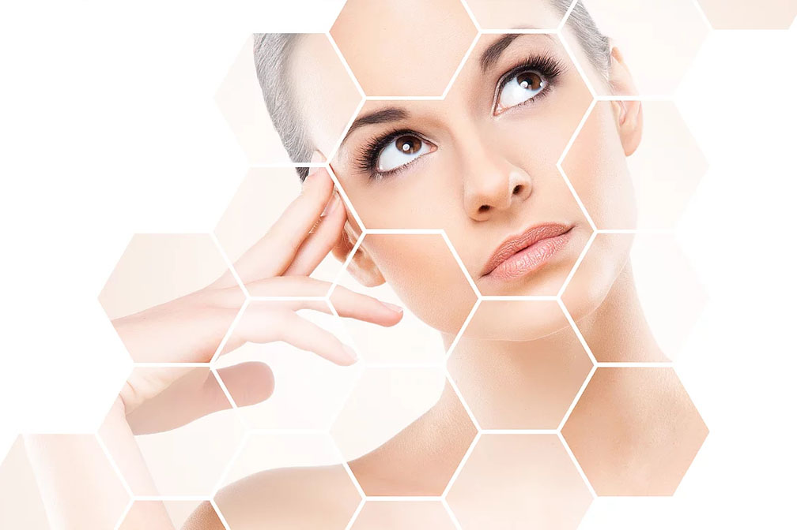

Генетический тест
Трихология

Не секрет, что большинство характеристик организма заложено генетически. И самый большой орган, кожа - не исключение!
Бывало ли у Вас когда-нибудь, например, что крем, о достоинствах которого говорит блогер или подруга Вам совершенно не подходит и не нравится?
Или после популярной косметологической процедуры Вы не получили заявленного эффекта?
Это объясняется тем, что мы все генетически разные! Что подходит одному, может быть во вред другому. При помощи генетического теста «Косметология» можно определить особенности именно вашей кожи. Это необходимо для того, чтобы врач-косметолог мог подобрать программу профилактики и лечения специально для Вас, эффективные для Вас процедуры, подходящую именно Вам косметику, определить какие ошибки в уходе были сделаны раньше и исправить их!
- Забор анализа: 5 минут
- Консультация по результатам: 60 минут
- Не требует подготовки
- Безболезненно
- Проводится однократно
- Стоимость 17 500 р.
В «L.R. CLINIC» Вы можете пройти генетические тесты по трем направлениям: «Косметология» и «Трихология», «Диетология». Исследования проводит высокотехнологичная медицинская компания, специализирующаяся в области генетики Basis Genotech Group.
Генетические тест "Трихология"
В генетическом исследовании по направлению «Трихология» анализируются 16 генов по 4 группам. Исследования позволят выявить андрогенную алопецию до появления первых или минимальных симптомов. На консультации с врачом будет составлена индивидуальная схема лечения с учетом степени генетического риска.
Группы исследуемых генов:
- Активация андрогенных рецепторов
- Оксидативный стресс
- Активация микровоспалений
- Метаболизм витаминов
Что входит в генетический отчет "Трихология"?
- Результаты генетического анализа и полный список исследуемых параметров, собранные в одной таблице.
-
Результаты генетического исследования и подробная интерпретация по каждому показателю. Включающие в себя:
- Необходимые витамины, аминокислоты и др
- Индивидуальные рекомендации по питанию.
- Рекомендации по проводимым косметологическим процедурам.
- Рекомендации по коррекции имеющихся изменений в генетическом профиле.
- Консультация врача-косметолога, дерматовенеролога по домашнему уходу за волосами, рекомендуемым процедурам, назначения витаминотерапии с учетом Ваших генетических особенностей.
Процедура
Процедура взятия образца ДНК для исследования занимает не больше 5 минут, врач-косметолог производит забор буккального (защечного) эпителия – несколько раз проходит ватным зондом по внутренней стороне щеки. За 30 минут до процедуры не рекомендуется есть, пить, курить, целоваться, жевать жевательную резинку и ополаскивать рот.
ДНК-образец вместе с заполненной Вами анкетой отправляется в лабораторию на исследования. Результаты генетического теста будут переданы лично на консультации с врачом-косметологом по мере готовности, ориентировочно через 3 недели. Также результаты в электронном виде будут высланы на Вашу почту.
Важно! Правильно интерпретировать результаты ДНК-теста и составить на его основе индивидуальную программу лечения и ухода может только врач-косметолог!
Преимущества
- Помимо подробного генетического отчета, пациент получает консультацию со специалистом по подбору косметологических процедур, средств для домашнего ухода, а также витаминов и БАДов с учетом генетических особенностей человека
- Консультацию проводят только врачи-косметологи, дерматовенерологи, прошедшие обучение по расшифровке генетических маркеров
- Генетический тест делается один раз в жизни
- Нет противопоказаний – генетическое исследование можно любой категории лиц (детям, взрослым, пожилым), любые болезни также не являются противопоказанием
Квалифицированные специалисты L.R.Clinic помогут расшифровать для Вас уникальный генетический код. Мы не только подберем индивидуальный план лечения по конкретным проблемам, но и поможем сформировать правильный образ жизни, подходящий именно Вам!